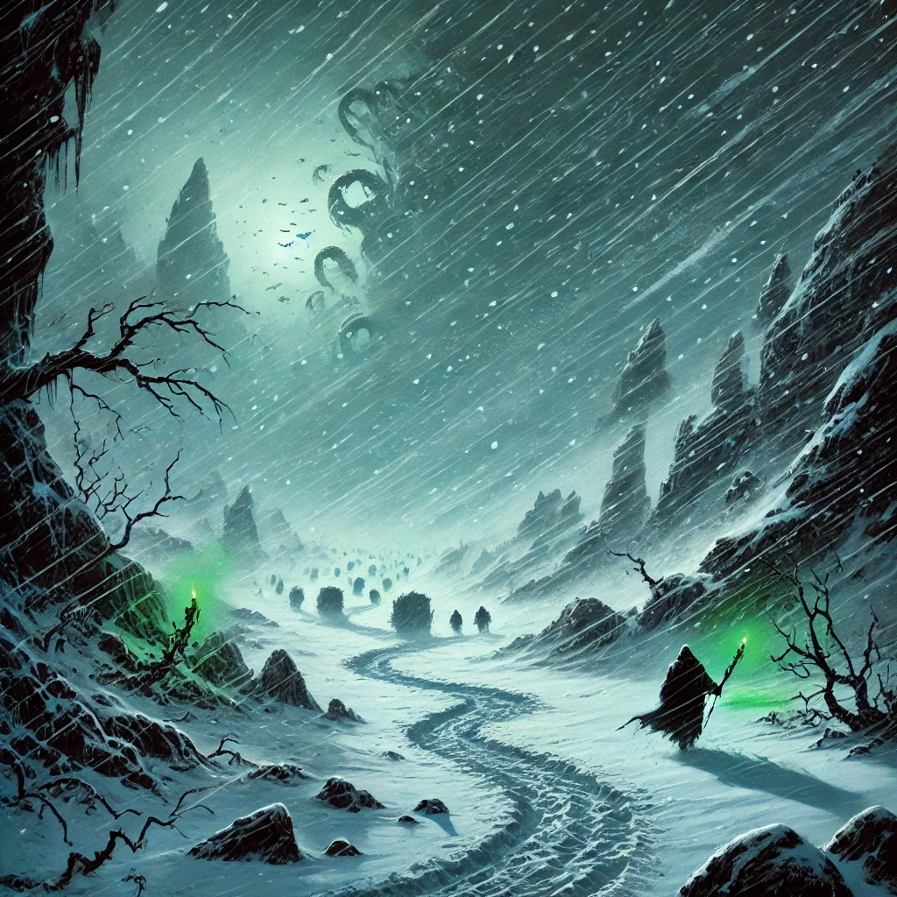

| Tokens Remaining | State Name | Effect |
|---|---|---|
| 4 Tokens | Strained Endurance | All Weather, Encounter, Hazard and Camp Setup/Breakdown DCs are increased by +2. |
| 2 Tokens | Critical Reserves | At the start of each day, each party member must make a DC 14 Constitution save to avoid exhaustion. |
| 0 Tokens | Severe Exposure |
Severe exposure: During each Travel Phase, each party member must make a DC 16 Constitution save to avoid exhaustion. Failed Camp Setup results in no rest. |
Apply these modifiers to all DCs for Hazards and Encounters based on the party’s current state.
| Category | Condition | Modifier |
|---|---|---|
| Blizzard Tokens | 5+ Tokens | +0 |
| 4 Tokens | +2 | |
| 2 Tokens | +4 | |
| 0 Tokens | +6 | |
| Shelter | Fully Functional Tent | +0 |
| Damaged Tent | +2 to Camp Setup/Breakdown DCs | |
| No Tent |
Automatic failure for Camp Setup; +3 |
|
| Exhaustion | Any | +1 per Level |
Each day has three phases:
Morning Phase:
Travel Phase:
Evening Phase:
Daily Environmental Toll
Breaking camp in a blizzard is no easy task. Each party member makes a Strength, Dexterity, Survival or Wisdom check to dismantle the shelter and their packs efficiently (DC 14). The outcome determines whether the party can push forward or if the chaos of the storm holds them back.
Success (Half or More Succeed):
The party works like a well-oiled machine. Tents are collapsed quickly, supplies packed tightly, and the group is ready to march within minutes. Spirits are high, and the path ahead feels achievable.
The party may start one level closer, at the same position, or any level farther back from their current position.
Failure (Fewer than Half Succeed):
Despite best efforts, the storm proves relentless. Frozen ropes and buried stakes slow progress, leaving the group frustrated and disorganized. Time slips away, and advancing closer feels impossible.
The party may only start at their current position or any level farther back. Moving closer is not permitted.
Critical Failure (No Successes):
A disastrous morning—gear is lost to the wind, tents collapse under icy gusts, and tempers fray as the group fights to salvage what they can. The storm exacts a toll, leaving everyone weary and battered.
The party may only start at their current position or any level farther back. Moving closer is not permitted, and they lose 1 Blizzard Token to reflect wasted resources and energy.
| Pursuit Level | Description | Encounters (per day) | Weather Events (per day) | Hazard Events (per day) |
|---|---|---|---|---|
| Closest Pursuit | Within sight of the horde, dangerously close but sheltered from the worst of the blizzard. | 3 | 0 | 1 |
| Close Pursuit | Safe yet near enough to observe horde movements. | 2 | 1 | 1 |
| Neutral Tracking | Balanced approach, minimizing detection while keeping the horde in sight. | 1 | 2 | 1 |
| Safe Distance | Far from the horde, reducing encounter risks but increasing storm exposure. | 1 | 2 | 1 |
| Far Shadow | Extreme caution to avoid detection, fully exposed to the blizzard. | 0 | 3 | 1 |
| Roll (d100) | Weather Event |
|---|---|
| 1–3 | Blizzard Surge: A violent cold wave engulfs the party. Each member makes a DC 16 Constitution save. If fewer than 3 succeed, each failing member gains 1 level of exhaustion, and the party is forced back one level. Spend 1 Blizzard Token to hold position. |
| 4–6 | Icefall: Falling icicles threaten the group. Each member makes a DC 12 Dexterity save. Failures take 2d6 slashing damage. If fewer than half succeed, the party is delayed and loses 1 Blizzard Token. |
| 7–9 | Howling Gale: Intense wind howls around the party, threatening their progress. Each member makes a DC 14 Strength (Athletics) check to stay upright. Failures cause the group to be forced back one level. Spend 1 Blizzard Token to avoid this penalty. |
| 10–12 | Sudden Chill: A biting cold wave cuts through gear. Each member makes a DC 15 Constitution save. Failures suffer disadvantage on attack rolls until the next rest. |
| 13–15 | Frozen Fog: Thick fog blinds the trail. The party makes a group DC 13 Survival check. If fewer than half succeed, the party loses 1 Blizzard Token. |
| 16–18 | Whiteout Conditions: Snow reduces visibility to zero. Each member makes a DC 14 Survival check. If fewer than half succeed, the group is forced back one level. Spend 1 Blizzard Token to hold position. |
| 19–21 | Avalanche Warning: A rumble threatens to unleash snow. Each member makes a DC 15 Survival check. Failures delay progress, causing 1 Blizzard Token loss. |
| 22–24 | Cracked Icefield: The ground beneath threatens to give way. Each member makes a DC 14 Dexterity save. Failures take 1d8 cold damage. If fewer than half succeed, the party is forced back one level. Spend 1 Blizzard Token to avoid the penalty. |
| 25–27 | Glacial Shift: Tremors cause ice shelves to collapse. Each member makes a DC 14 Strength (Athletics) check to stay upright. If fewer than half succeed, the party loses 2 Blizzard Tokens. Spend 1 Blizzard Token to reduce the loss to 1. |
| 28–30 | Snow Drift: Deep snow slows progress. The party makes a group DC 12 Strength (Athletics) check. If fewer than half succeed, lose 1 Blizzard Token. |
| 31–33 | Eerie Silence: The storm quiets, leaving only the sound of footsteps. No penalties or bonuses. The atmosphere is unsettling. |
| 34–36 | Gentle Flurries: Light snow falls, briefly calming the storm. No penalties or bonuses. The respite is fleeting. |
| 37–39 | Frozen Mirage: The snow creates strange illusions. Each member makes a DC 13 Perception check. Failures cause disadvantage on saving throws until the next rest. If fewer than half succeed, the party loses 1 Blizzard Token. |
| 40–42 | Blinding Sunlight: A break in the storm creates intense glare off the snow. Each member makes a DC 13 Perception check. Failures cause disadvantage on skill checks until the next rest. |
| 43–45 | Heavy Snowfall: Snow builds rapidly, making progress difficult. Each member makes a DC 14 Strength (Athletics) check. If fewer than half succeed, the group loses 1 Blizzard Token. |
| 46–48 | Frozen Cascade: A waterfall freezes overhead, its beauty awe-inspiring. No penalties or bonuses. |
| 49–51 | Frozen Archway: A natural ice arch towers above. No penalties or bonuses, but the sight is striking. |
| 52–54 | Aurora’s Calm: A vivid aurora fills the sky, lifting spirits. Each member gains advantage on Survival checks for the rest of the day. |
| 55–57 | Spirit’s Breath: A warm breeze melts frost from your gear. Gain 1 Blizzard Token. |
| 58–60 | Golden Warmth: A strange heat surrounds the party briefly. Each member heals 1d6 hit points. |
| 61–63 | Mystic Light: The storm clears momentarily, and a warm glow fills the air. Reduce the next Camp Setup DC by 2. |
| 64–66 | Snowbound Tracks: Old tracks emerge briefly from under the snow. The path ahead feels surer. Gain advantage on Navigation checks for the next day. |
| 67–69 | Deadly Silence: All sound is muted as the blizzard intensifies. No penalties or bonuses. |
| 70–72 | Gentle Glow: A faint green glow lights the snow. No penalties or bonuses, but it fills the party with unease. |
| 73–75 | Icy Gale: A sharp wind cuts into the party. Each member makes a DC 14 Constitution save. Failures gain 1 level of exhaustion. |
| 76–78 | Rising Blizzard: The storm swells to its peak. Each member makes a DC 16 Constitution save. Failures suffer 1 level of exhaustion and cause the group to fall back one level. Spend 2 Blizzard Tokens to avoid this penalty. |
| 79–81 | Snow Pellets: Small, hard chunks of ice hit like hail. Each member makes a DC 13 Dexterity save. Failures take 1d6 bludgeoning damage. |
| 82–84 | Freezing Fog: A thick mist surrounds the party, chilling them. Each member makes a DC 15 Constitution save. Failures gain 1 level of exhaustion. |
| 85–87 | Thick Snowdrifts: The path ahead is blocked by dense snow. Each member makes a DC 12 Strength check. If fewer than half succeed, the group loses 1 Blizzard Token. |
| 88–90 | Blizzard’s Edge: The storm’s intensity lessens briefly. Gain 1 Blizzard Token and advantage on Perception checks for the rest of the day. |
| 91–93 | Rushing Wind: A sudden gust forces the party off balance. Each member makes a DC 14 Dexterity save. Failures cause 1d6 bludgeoning damage. |
| 94–96 | Icy Stillness: The air calms, though the cold is sharp. No penalties or bonuses. |
| 97–100 | Storm’s Wrath: The storm lashes with fury. Each member makes a DC 18 Constitution save. Failures suffer 1 level of exhaustion, and the party loses 2 Blizzard Tokens. Spend 1 Blizzard Token to reduce the loss to 1. |
| Roll (d100) | Encounter |
|---|---|
| 1–4 | Dreamkeeper Patrol: A group of 5 Dreamkeepers (CR 5 each) roams the area. Avoid: Stealth or Deception (DC 16). If fewer than 3 succeed, the patrol notices the party, and they are forced back one level. Combat: If the party fights, the patrol calls reinforcements after 3 rounds, adding a Frost Giant Zombie (CR 9). |
| 5–8 | Frost Troll Ambush: Two Frost Trolls (CR 10 each) hide among the snow. Avoid: Perception (DC 15). If fewer than 2 succeed, the trolls attack. Combat: Fighting risks Blizzard Token loss (-1) if combat lasts more than 3 rounds. |
| 9–12 | Horde Supply Train: A wagon pulled by enslaved creatures is stuck in the snow, guarded by 6 Berserkers. Avoid: Stealth (DC 17). If fewer than 3 succeed, the guards attack, and the party is forced back one level. Combat: A quick victory rewards 1 Blizzard Token and a cache of gold and gems (roll Level 2 Treasure (DMG)). |
| 13–16 | Ice Wraith Ambush: A trio of Ice Wraiths (CR 6 each) emerges from the snow. Avoid: Nature (DC 14) to detect them early. If fewer than 2 succeed, the wraiths strike with surprise, and the party suffers disadvantage on initiative rolls. Combat: The wraiths drain warmth, forcing a DC 16 Constitution save after the fight or suffer 1 level of exhaustion. |
| 17–20 | Frozen Dead Minion: A lone Dreamkeeper frozen in the snow radiates magic. Approaching triggers an arcane trap (DC 15 Dexterity save or take 6d8 cold damage). Avoid: Arcana (DC 14) to recognize the danger. Combat: None (trap only). |
| 21–24 | Winter Wolf Pack: Four Winter Wolves (CR 3 each) stalk the party. Avoid: Stealth (DC 14). If fewer than 2 succeed, the wolves attack. Combat: Wolves howl to summon reinforcements if not defeated within 3 rounds, adding 2 more wolves. Failure to avoid or win quickly costs 1 Blizzard Token. |
| 25–28 | Frozen River Ambush: A Frost Salamander (CR 9) lies beneath a frozen river. Avoid: Perception (DC 15) to notice cracks in the ice. If fewer than 3 succeed, the salamander breaks through, attacking with surprise. Combat: Failure to win in 3 rounds forces the party to fall back one level. |
| 29–32 | Shattered Shrine: The party finds a horde shrine covered in ice. Touching it summons a Blizzard Elemental (CR 11). Avoid: Religion (DC 15) to recognize the shrine’s danger. If fewer than 3 succeed, the elemental appears regardless. Combat: If fought, the elemental’s death restores 1 Blizzard Token. |
| 33–36 | Captured Prisoners: A group of captives is being led by 4 Ogre Guards (CR 8 each). Avoid: Deception (DC 16) to pose as Dreamkeepers. If fewer than 3 succeed, combat ensues. Combat: Defeating the guards rewards 1 Blizzard Token and supplies (roll Level 2 Treasure (DMG)). |
| 37–40 | Horde Vanguard: Two Ice Devils (CR 14 each) scout ahead of the horde. Avoid: Stealth (DC 18). If fewer than 3 succeed, combat begins. Combat: Failure to win quickly forces 1 Blizzard Token loss and fall back one level. |
| 41–44 | Frozen Behemoth: An awakened Rhemorhaz (CR 14) lurks beneath the snow. Avoid: Nature (DC 16) to recognize the signs of its movement. If fewer than 3 succeed, it attacks. Combat: Its fiery body melts nearby snow, granting the party advantage on Constitution saves after the fight. |
| 45–48 | Ethereal Spirits: Lost souls wail in the wind, trying to sap warmth. Avoid: Wisdom save (DC 15). If fewer than 3 succeed, each party member takes 4d6 psychic damage and suffers disadvantage on saving throws until the next rest. Combat: Spirits cannot be harmed physically. |
| 49–52 | Blizzard Hag: A Night Hag disguised as a snowstorm approaches. Avoid: Insight (DC 14). If fewer than 3 succeed, the hag attacks. Combat: Defeating her restores 1 Blizzard Token. |
| 53–56 | Collapsed Outpost: A ruined outpost holds remnants of gold and weapons. No penalties or bonuses. The party finds Level 1 Treasure (DMG) if they search. |
| 57–60 | Aurora’s Calm: A mystical aurora surrounds the party, lifting their spirits. Gain advantage on Survival checks for the next day. |
| 61–64 | Frozen Glade: The wind stops in a serene, frozen clearing. No penalties or bonuses. The silence is unnerving, but nothing disturbs the party. |
| 65–68 | Snow-Covered Spire: A distant spire juts from the snow, unreachable but awe-inspiring. No penalties or bonuses. |
| 69–72 | Ancient Totem: A carved totem stands in the snow. It radiates faint warmth, granting advantage on Wisdom saves for the next rest. |
| 73–76 | Lost Tracks: Snow obscures the trail. The party makes a group DC 14 Survival check. If fewer than half succeed, the party is forced back one level. Spend 1 Blizzard Token to find the trail again. |
| 77–80 | Frozen Predator: A Frost Giant Zombie (CR 9) stalks the party. Avoid: Stealth (DC 15). Combat: Its attacks sap warmth, forcing DC 14 Constitution saves after the fight or gain 1 exhaustion. |
| 81–84 | Shifting Ice Maze: Cracks and shifting ice disorient the party. Each member makes a DC 13 Survival check. If fewer than half succeed, the party loses 1 Blizzard Token. |
| 85–88 | Rogue Blizzard Elemental: A lost elemental wanders the storm. Avoid: Nature (DC 14). If fewer than 3 succeed, combat ensues. Combat: Defeating it restores 1 Blizzard Token. |
| 89–92 | Horde Scout: A lone Dreamkeeper scout rides a winter wolf. Avoid: Stealth (DC 15). If spotted, combat is brief but dangerous. |
| 93–96 | Icy Mirage: The snow forms illusions that lead the party astray. Each member makes a DC 13 Perception check. If fewer than half succeed, the party loses 1 Blizzard Token. |
| 97–99 | Blizzard Surge Patrol: A horde patrol enhanced by the blizzard strikes. Avoid: Stealth (DC 18). Combat: Failure to avoid costs 2 Blizzard Tokens and forces the party to fall back one level. |
| 97–99 | Ice Dragon Cometh: Arveiaturace, The White Wyrm decendes on the party. |
| Roll (d100) | Hazard |
|---|---|
| 1–4 | Frozen Ravine: A deep ravine blocks the path. Each member must make a DC 14 Dexterity (Acrobatics) check. If fewer than half succeed, the party is forced back one level. Spend 1 Blizzard Token to find an alternate route. |
| 5–7 | Icy Descent: The trail leads down a treacherous slope. Each member must make a DC 12 Dexterity (Acrobatics) check. Failures take 1d6 bludgeoning damage. If more than half fail, lose 1 Blizzard Token to recover. |
| 8–11 | Falling Ice: A sudden crack in the glacier sends icicles raining down. Each member makes a DC 13 Dexterity save. Failures take 2d6 slashing damage. If fewer than half succeed, the party is delayed and loses 1 Blizzard Token. |
| 12–15 | Snowdrift Trap: Deep snow obscures a hidden sinkhole. Each member must make a DC 14 Strength (Athletics) check to avoid being trapped. Failures cost 1 level of exhaustion. |
| 16–19 | Lost Path: Snow obscures the trail. The party makes a group DC 12 Survival check. If fewer than half succeed, they are forced back one level. Spend 1 Blizzard Token to avoid the penalty. |
| 20–23 | Hidden Crevasse: A crack in the ice forces careful maneuvering. Each member makes a DC 13 Dexterity save. Failures take 1d8 cold damage, and if fewer than half succeed, lose 1 Blizzard Token. |
| 24–27 | Whiteout Ridge: A sharp ridge disappears into a blinding whiteout. Each member makes a DC 15 Survival check. If fewer than half succeed, the party is forced back one level. Spend 1 Blizzard Token to maintain position. |
| 28–31 | Frozen River Crossing: An icy river requires balance. Each member makes a DC 14 Dexterity (Acrobatics) check. Failures take 1d6 cold damage. If fewer than half succeed, lose 1 Blizzard Token. |
| 32–35 | Avalanche Warning: A rumble threatens to collapse nearby snow. Each member must make a DC 14 Survival check to find safe ground. If fewer than half succeed, the party is forced back one level and loses 1 Blizzard Token. |
| 36–38 | Slick Cliffside: Ice covers a narrow ledge. Each member must make a DC 15 Acrobatics check to cross safely. Failures take 1d6 bludgeoning damage, and if fewer than half succeed, the party is delayed and loses 1 Blizzard Token. |
| 39–41 | Cracked Ice Field: A field of unstable ice threatens to give way. Each member makes a DC 13 Dexterity save. Failures take 1d8 cold damage. If fewer than half succeed, the party is forced back one level. |
| 42–45 | Icicle Maze: A dense field of towering icicles blocks the path. Each member makes a DC 12 Dexterity check. Failures cause 1d6 slashing damage, and if fewer than half succeed, lose 1 Blizzard Token. |
| 46–50 | Gentle Descent: A sloping path offers an easy route down. No penalties or bonuses. The snow crunches softly beneath your boots, the only sound in the silence. |
| 51–54 | Sheltered Outcrop: A natural rock formation shields you briefly from the storm. No penalties or bonuses. The respite feels welcome but fleeting. |
| 55–58 | Scattered Debris: The remains of a ruined cart litter the snow. Gain advantage on Investigation checks for the next phase. |
| 59–62 | Frozen Supply Cache: You find a bundle of frozen supplies. Gain 1 Blizzard Token and 1d4 rations. |
| 63–65 | Glacial Arch: A massive ice arch looms above. The beauty is striking, but the path beneath is slick. Each member makes a DC 12 Dexterity check. Failures slide into the snow but suffer no further harm. |
| 66–69 | Narrow Trail: A thin, precarious path hugs a ridge. Each member must make a DC 14 Acrobatics check. Failures delay the group, causing 1 Blizzard Token loss. |
| 70–72 | Crumbling Ice Shelf: The shelf beneath cracks alarmingly. Each member makes a DC 15 Dexterity save. Failures fall into the snow for 2d6 bludgeoning damage. |
| 73–75 | Hidden Relic: Among the snow, you find an ancient relic. Roll Minor Magic Items Table (DMG). |
| 76–80 | Spiritual Shelter: A faint glow in the snow offers warmth. Each member heals 1d6 hit points, and the party gains advantage on the next Constitution saving throw. |
| 81–84 | Quiet Pass: The snow grows quiet, and the wind subsides. No penalties or bonuses. The moment feels almost sacred. |
| 85–87 | Snowblindness: Blinding reflections off the ice disorient the group. Each member makes a DC 13 Perception check. Failures cause disadvantage on skill checks until the next rest. |
| 88–90 | Glacial Movement: The ground trembles as a glacier shifts. Each member makes a DC 14 Survival check. If fewer than half succeed, the party is forced back one level. Spend 1 Blizzard Token to hold position. |
| 91–93 | Frostbitten Deadfall: A heavy branch blocks the way. Each member makes a DC 12 Strength check. If fewer than half succeed, lose 1 Blizzard Token to clear the path. |
| 94–96 | Collapsing Snow Bridge: A snow bridge collapses as the party crosses. Each member makes a DC 15 Dexterity save. Failures take 2d6 cold damage. If fewer than half succeed, the party is forced back one level. |
| 97–100 | Ice Storm: A violent storm descends. Each member makes a DC 16 Constitution save. Failures cause 1 level of exhaustion. If fewer than half succeed, the party loses 2 Blizzard Tokens. Spend 1 Blizzard Token to reduce the loss to 1. |
Camp Setup Challenge
Each member makes a Strength, Dexterity, Survival, or Wisdom check (DC 14) to secure the tent:
Spending Blizzard Tokens for Advantages Before Bed
| Advantage Name | Effect | Scope |
|---|---|---|
| Improved Camp Breakdown | The Camp Breakdown DC is lowered by 3 for the following morning. | Team |
| Secured Shelter | The party avoids the next Hazard Event encountered in the following day. (One Use) | Team (one use) |
| Improved Camp Setup | The Camp Setup DC is lowered by 3 for the following night. | Team |
| Rerouted Path | The party can skip the next Encounter Event if it is negative. (One Use) | Team (one use) |
| Resilient Team | Each party member ignores the first level of exhaustion gained during the next day. | Team |
| Enhanced Focus | The party has advantage on Perception checks for the next encounter phase. (One Use) | Team (one use) |
| Clear Weather Charm | Skip the next Weather Event if it’s negative. (One Use) | Team (one use) |
| Safe Passage | The party ignores the next encountered Hazard Event. (One Use) | Team (one use) |
| Protected Path | The group gains advantage on Stealth checks until the next encounter phase. (One Use) | Team (one use) |
| Spiritual Shelter Blessing | All members gain advantage on Wisdom and Charisma saving throws for the next encounter phase. (One Use) | Team (one use) |
| Gamble for Blizzard Tokens | Once per night, roll a d6: On a roll of 5 or 6, gain 2 Blizzard Tokens; on a roll of 1–4, lose the token. Only one Gamble allowed per night. | Team |
| Guide’s Insight | One member may reroll a failed group check during the following day. (One Use) | Team (one use) |
| Patch Kit | Repairs the party tent to full durability, removing all penalties associated with damage. | Team |
| Avoid Unwanted Attention | Skip a negative Encounter Event at any pursuit distance. | Team (one use) |
| Inspiration | Each member gains inspiration (advantage on one roll of their choice). | Team |
| Strengthened Resolve | Each party member gains advantage on all Constitution saving throws for the next day. | Team |
| Pushback Resistance | Avoid one level of forced fallback in pursuit distance during the next day. (One Use) | Team (one use) |
| Guaranteed Long Rest | Ensures the entire party receives a long rest that night, restoring resources as normal. | Team |
| Focus of Insight | All players gain advantage on Wisdom-based checks for the next day. | Team |
| Refreshed Mind | The player gains advantage on all Intelligence-based checks for the next day. | Personal |
| Heightened Senses | The player gains advantage on all Perception checks for the next day. | Personal |
| Quick Recovery | The player removes one level of exhaustion. | Personal |
| Steadfast | The player gains advantage on all Wisdom saving throws for the next day. | Personal |
| Focused Tracker | The player gains advantage on all Survival checks for the next day. | Personal |
| Personal Shelter | The player automatically succeeds on any setup or breakdown challenge personally. | Personal |
| Night Watch | The player gains advantage on initiative checks and reaction checks until the next rest. | Personal |
| Nimble Reflexes | The player gains advantage on all Dexterity saving throws for the next day. | Personal |
| Clear-Headed | The player gains advantage on all Charisma-based checks for the next day. | Personal |
| Strengthened Endurance | The player gains advantage on all Strength-based checks for the next day. | Personal |
Rest and Exhaustion Resolution
Exhaustion Levels and Effects
In this mini-game, the standard D&D exhaustion rules apply, with each level adding a debilitating effect that compounds as the party struggles through the relentless blizzard. Here’s a quick reference:
| Exhaustion Level | Effect |
|---|---|
| 1 | Disadvantage on ability checks |
| 2 | Speed halved |
| 3 | Disadvantage on attack rolls and saving throws |
| 4 | Hit point maximum halved |
| 5 | Speed reduced to 0 |
| 6 | Death |
Managing and Reducing Exhaustion
Since exhaustion accumulates rapidly and affects the party’s survival, players will need opportunities to mitigate it. Here’s how they can manage exhaustion:
Long Rest with Successful Camp Setup
Good Night’s Sleep (Individual Blizzard Token Expenditure)
Exposure Risk:
Inventory Check:
If the party is in the Farthest Back Position (Far Shadow) and a weather event, hazard, or encounter forces them to fall back further, and they are unable or unwilling to spend Blizzard Tokens to prevent it, they lose track of the horde entirely. The mini-game ends, and the party is forced to abandon the pursuit and retreat to Ten-Towns, failing to discover the horde's destination or intervene in time. Losing the horde does not mean the campaign ends, but the party must regroup and face the consequences of failure.